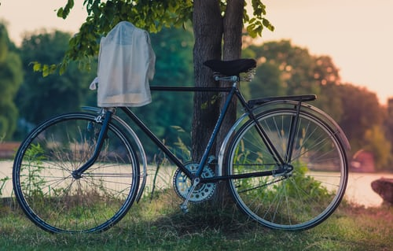

Gypsy Pond Park

- availability: 20 min ride: 10 out of 10
- parking: 3 or 4 parking spots at the entrance, lot of visitors but space is enough: 10;
- sightseeings: old mill, some river rocks, bridges: 8;
- social distance: wide walkways, sometimes under the bridges paths become very tight and the path is intended for bycyclist primarily,
so be ready for being cautious and watch bycicle racers:8;
- food: within the park nothing as expected, but around park some fast food facilities operate, so no issues: 10 ;
- space: lots of loans for tanning or picnics: 10;
- acess to waterfront: nice and quiet Goffle Brook River along the path: 10;
- clean and maintained facilities: nothing special, may be present, didn't have a chance to see any restboots, but website says they are present,
so formally i give the credit for this spacious and bit long walkway (we walked the entire path and back on feet, about 5 miles - the best exercise
imho): 10;
- tickets:free: so 10;
- guards: at the time of the visit no one was in sight but the visitors behaved very friendly: 10;